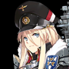

Альтернативные шахматы - Приквел
Операция Альтернативные Шахматы Если два противоборствующих слона находятся на клетках разного цвета им никогда не суждено встретиться. ... |
| ? ? ? | ...... Просыпайся. Битва скоро начнётся. ......... |
|
| ...Я видела очень длинный сон. Мне снился мир заполненый льдом... Одинокий, заброшенный мир на самой границе реальности... |
Тирпиц |
|
| Граф Цеппелин |
Сон..? Чушь. Пешки вроде тебя не видят снов. Даже если бы и видели, это был бы просто фрагмент твоих собственных мыслей, как галлюцинация. | |
| Да какая разница, снился ли тебе сон или галлюцинация. Это не имеет значения. Единственное, что сейчас имеет значение, — это то, что Белые Фигуры вошли в Зеркальное Море. Если вы не хотите, чтобы вас принесли в жертву, то вам лучше приготовиться к бою. |
Дойчланд |
|
| Тирпиц |
В жертву, хах... ......... |
|
| Ахахах~! Я, Дойчланд, возглавлю атаку! В конце концов, перехваты — моя сильная сторона! Держу пари, что это будет просто очередной раунд стрельбы по беспомощным мишеням. Они познают истинный ужас столкновения с лучшим броненосцем в мире! |
Дойчланд |
Разработка 1

| Дойчланд |
...... Гааааааагххх! Как вы смеете, ничтожные животные-рабы... так со мной поступать?! Я лучше утону, чем сдамся таким ничтожным животным, как вы! |
| Гамбит... Провалился уже 255 раз. Неужели это всё на что способна эволюция Системы Естественного Расчёта? | ??? |
|
| ??? |
Но на этот раз это было гораздо быстрее, чем я изначально предполагала! Люди... или, скорее, "естественная эволюция", занимает много времени~ | |
| Однако это не удовлетворит Судью. Нам нужно больше Фигур... Нам придётся повременить с отправкой Зеркальных Образов, которые мы создали... | ??? |
|
| ??? |
Все в порядке. Они будут действовать именно так, как их обучили... нет, как их заставили. Скорость моего производства может удовлетворить все потребности эксперимента, пока у нас есть резервная копия Оригинала. |
|
| Если это так, то, думаю, мне не о чем беспокоиться. Однако... Я хочу, чтобы на этот раз Белый был просто иллюзией... |
??? |
Фланг 1
| U-557 |
...... ...Подходим к целевой точке. Никаких признаков противника. Отменяю статус повышенной готовности. Всплытие на перископную глубину и переход в режим шноркеля. |
|
| Всё именно так, как и докладывала разведка. Ветер здесь не дует. | U-47 |
|
| U-557 |
Такое ощущение, что давление намного выше, чем снаружи... Это как-то неправильно... Давай просто закончим миссию и вернемся назад... |
|
| Подожди. Приближается цель. Судя по опознавательному сигналу, они... союзники? | U-47 |
|
| U-557 |
Это не то место, где могут быть союзные корабли... Может сонар сломался? ....Нет, подожди. Я тоже принимаю их сигнал... |
|
| Погружайся и приготовься к худшему. Помни что командир говорил о том, что не стоит доверять ничему в Зеркальном море. | U-47 |
|
| U-557 |
Точно... Нам просто стоит оставаться под водой и собирать разведданные... | |
| Время стелс миссии... Это должно быть просто. | U-47 |
Разработка 2
| Адмирал Хиппер |
А? Ты, должно быть, новый Белый? Ты выглядишь таким слабаком. Но ты как-то победил Дойча... Я имею в виду Лютцова... Короче, ты победил ту пацанку, которая ринулась в бой, крича, что она "лучший броненосец в мире", да? Вообще-то, не отвечай, у тебя на лице все написано! Я не испытываю никакой симпатии к этой дурочке, но и позволить ей создать у тебя ложное впечатление о мощи Железной крови я тоже не могу! Я, Адмирал Хиппер, величайший в мире тяжелый крейсер, прикончу тебя в мгновение ока! |
Инициатива 1
| Гнейзенау |
*Вздох*... Они пропустили Белого. Они как всегда облажались. Им ничего нельзя доверить. Вероятность твоей победы 31,75% согласно моим расчетам. Но в реальном бою... кто знает? Я Гнейзенау, линейный крейсер класса «Шарнхорст» номер два. Я оценю твой боевой потенциал. |
Инициатива 2
| Гнейзенау |
Смоделированные мною данные были не верны... Ты действительно сила, с которой нужно считаться... Но если я смогу объединить силы с сестрой, наши шансы на победу возрастут как минимум до 80%... ...Время тактического отступления. |
|
... |
||
| Тирпиц |
... | |
| В чём дело? | Граф Цеппелин |
|
| Тирпиц |
Каждый ход, который делает Белый, отличается от предыдущего... | |
| Понятно. Возможно, именно на это и рассчитывает Судья. | Граф Цеппелин |
|
| Тирпиц |
Я тут кое о чём подумала... А что, если нам суждено быть просто... просто ступеньками в «эволюции» Белого... Сирены дали нам нашу силу... А что, если все это часть их плана... |
|
| Стоп... Ты сойдёшь с ума, если будешь продолжать думать в таком ключе. Не обесценивай Её жертвы ради Железной крови... | Граф Цеппелин |
|
| Тирпиц |
"Её?" | |
| ...Не важно. Она была мечтательницей, как и ты. Хм, какая же она была дура, потеряв себя в своих идеалистических заблуждениях... | Граф Цеппелин |
|
| Тирпиц |
...... |
И все же именно она проложила путь к иному будущему для нашего вида в этом мире... |
Повышение 1
| Шарнхорст |
Если ты зашёл так далеко, это может означать только одно... Не хочу признавать этого, но ты, возможно, немного отличаешься от тех, с кем мы сражались до сих пор. Но ещё никто не ускользал от наших мощных пушек. Ты не будешь исключением! |
|
| Я собрала много данных во время нашей последней битвы. На этот раз наши шансы на победу превышают 90%. | Гнейзенау |
|
| Шарнхорст |
Послушайте, глупцы, стоящие перед Сёстрами Акулами! Здесь начинается наша охота! И не смейте меня разочаровывать! | |
| Шарнхорст |
Линейные крейсеры класса «Шарнхорст» «Шарнхорст» и «Гнейзенау» готовы к бою! Приходите и встретьте свою судьбу! | Гнейзенау |
Повышение 2
| Тирпиц |
Снова этот сон... Скандинавский снег, свирепый и бушующий ветер... и гулкий рев двигателей бесчисленных истребителей... Взрыв, за которым последовало затопление... а затем вечная тьма на дне моря... |
|
| Это ты? Ты Тирпиц... Ты моя сестра... |
???  |
|
| Тирпиц |
Кто ты?... | |
| ...Мне так жаль...Пожалуйста прости меня... | ??? |
|
| Тирпиц |
Моя сестра...Бисмарк? Нет, это невозможно... Я не помню тебя... Ты не должна существовать в моей памяти... | |
| Мне жаль... Я сделала то, что должна был сделать ради Железной крови... Я просто хочу, чтобы ты это поняла... | ??? |
|
| Тирпиц |
Ах..Как же болит голова...Это опять возвращается...Непреодолимое чувство одиночества... |
...Кто...я?... ...Просто кто я...на самом деле...? |
Альтернативные шахматы - Сиквел
| ??? |
Чрезвычайное положение. Подтверждено Пробуждение Отклика среди Фигур. Скорость синхронизации с Игроком выросла на 7%. | |
| Пробуждение Отклика? Это значит, что скоро мы получим результаты, которые необходимы Судье. Как только ты полностью подтвердишь Пробуждение и запишешь последовательность, я уничтожу резервную копию Оригинала. Не забывай об этом. |
??? |
|
| ??? |
Ты уничтожишь её? Погоди, у меня только что возникла интересная идея... Я активирую механизм карантина и брошу в бой всех Черных Пешек! |
|
| Тестер, зачем тебе это надо...?! | ??? |
|
| ??? |
На этот раз я лично выясню разрыв в потенциале Белого... нет, Системы Естественного Расчета и человечества! |
Транспозиция 1
| Z46 |
...К битве присоединилась еще одна интересная Фигура. Итак, ты прорвался сквозь всю нашу оборону? Понятно. Гениальный противник и гениальное имя... Ты меня заинтересовал. Я эсминец класса "Z" Z46. У меня нет настоящего имени, чтобы представиться, хотя... Теперь давайте сразимся, мои блестящие противники. Присоединяйтесь ко мне для игры в шахматы! |
Транспозиция 2
| Z46 |
...Конец... Я вижу, что нехватка боевого опыта стала моей ошибкой. Мне следовало лучше планировать своё превосходство в борьбе с авиацией. Тем не менее... Я никогда бы не подумала, что этот мир может настолько отличаться от того, чего я ожидала! Это так захватывающе! В следующий раз, когда мы встретимся... Ты сыграешь со мной... еще раз? |
Отклонение 1
| Граф Цеппелин |
Это и есть прекрасное послевкусие жизни, растраченной попусту... ...Понятно. Существование вас, жалких Фигур, достойных лишь уничтожения, — это единственное что придает истинный смысл моей временной жизни и этой войне... Я авианосец Граф Цеппелин. Мои железнокровные Крылья Ада обрушат на вас апокалиптическое разрушение с небес! |
Отклонение 2
| Граф Цеппелин |
Моя неполная форма действительно не смогла вам помочь... Хм... Так оно и есть. Еще одна возможность спокойно наблюдать собственное разрушение... В конечном итоге моя армия стала не более чем еще одной Фигурой... О, какая ирония... Ахахахахах! |
...Так не должно было быть... Чтобы получить больше силы, чтобы защитить Железную Кровь, защитить своих союзников, я принесла столько жертв, уничтожила столько врагов, просто следуя «приказам». Я смирилась с тем, что стала простой Фигурой наших заклятых врагов... Акаги... Что же ты там задумала? |
Перегрузка 1
| Тирпиц |
...Эта битва... совершенно бессмысленна. Несмотря на это вы всё ещё хотите продолжать? Пусть так и будет... Я посмотрю, насколько вы на самом деле решительны. |
Перегрузка 2
| Тирпиц |
Итак, вы были избраны Создателем. У меня нет выбора, кроме как признать разницу в силе между нами. Теперь я наконец поняла, что означают мои сны. Что есть реальный мир, который лежит за этим зеркальным... И в этом реальном мире есть другая я, которая сражается за Железную Кровь... Ха-ха... «Борись за свои надежды и убеждения»... Именно этого я и не могла делать в этом мире... Если ты снова меня встретишь... скажешь ли ты мне что нибудь? ...Например «Я хочу, чтобы ты с гордостью боролась до самого конца»... |
Прощай... ...другая «я» за зеркалом, с которой я никогда не встречусь... |
Шах и Мат 1
| Тестер β |
Одновременно пробудилось несколько Пешек, что делает эксперимент крайне успешным. | |
| Ну и что ты собираешься с этим делать? Если они украдут резервную копию Оригинала, то это нарушит ход войны снаружи. | ????? |
|
| Тестер β |
Пока действует механизм карантина, они не могут покинуть Зеркальное море. В любом случае, скорость эволюции Белого значительно превзошла оценку, полученную в результате моделирования Системы естественных вычислений. Теперь, когда мы это знаем, мы достигли своей цели. |
|
| Это значит, что ты... | ????? |
|
| Тестер β |
Как Тестер, живой модуль в системе отладки, я планирую собрать как можно больше данных для внесения корректировок. Я уточню, предлагают ли они свои души в качестве жертвы или всё таки надеются поставить нам мат~ |
Шах и Мат 2
| Тестер β |
Наконец-то мы встретились, любимые избранники Создателя! Боже, посмотрите на свои глаза... В глазах той девушки, которая просила у нас силу, мы видели только беспокойство о будущем, разочарование и сожаление... Но вы, девушки, другие. Это не имеет никакого отношения к нациям, идеалам или воспоминаниям, а ваша связь с людьми... Этот элемент, является чем-то незаменимым для результатов эволюции, к которым мы стремимся... Однако мы должны знать, нужный ли это элемент или нет... И именно для этого я, Тестер Бета, и была создана! Теперь давайте начнём эксперимент! |
Фланг 2
| U-557 |
Ты записываешь всё это? | |
| Да... Я не знаю, как этот флот появился снова, если его уничтожили... Ситуация даже хуже, чем я думала. | U-47 |
|
| ????? |
Привет. Я думала, что вы двое это лишь баги в нашей системе, но вы не баги, вы просто маленькие рыбки. | |
| Они нашли нас...Мой сонар даже ничего не показал... | U-557 |
|
| U-47 |
У нас могут быть проблемы... Погружайтесь на максимальной скорости! | |
| Я не могу просто позволить вам уйти, когда вы зашли так далеко. Что вы скажете на то, чтобы стать моими новыми Пешками? Я бы могла превратить вас в новый вид, чтобы мы могли собрать ещё больше интересных данных. |
Наблюдатель |
|
| U-47 |
Нам нужно передать эту информацию командиру...! | |
| U-47, уходи без меня... Противник врятли имеет возможность преследовать нас на нашей максимальной глубине погружения... Ты все равно быстрее меня. Я постараюсь выиграть тебе немного времени. |
U-557 |
|
| U-47 |
557... ...Хорошо. Желаю тебе удачи. |
|
| Посмотри на это. Наши данные оказались верны - ты и вправду хорошо убегаешь. Ха-ха! Ну, и как ты планируешь выбраться из сложившегося положения, маленькая Мисс Оставленная? |
Наблюдатель |
|
| U-557 |
...Меня раньше называли неудачливой подлодкой... и до сих пор я думала, что это правда... Но сейчас...Это больше не так! Сестры мои, дайте мне смелости...! |
Шах и Мат 3
| СИСТЕМА |
ПОСЛЕДОВАТЕЛЬНОСТЬ ГАМБИТА НАЧАЛАСЬ. НЕМЕДЛЕННО НАЧИНАЙТЕ УТИЛИЗАЦИЮ РЕЗЕРВНОЙ КОПИИ ОРИГИНАЛА. ПОСЛЕДОВАТЕЛЬНОСТЬ ГАМБИТА НАЧАЛАСЬ. НЕМЕДЛЕННО НАЧИНАЙТЕ УТИЛИЗАЦИЮ РЕЗЕРВНОЙ КОПИИ ОРИГИНАЛА. ПОСЛЕДОВАТЕЛЬНОСТЬ ГАМБИТА НАЧАЛАСЬ. НЕМЕДЛЕННО НАЧИНАЙТЕ УТИЛИЗАЦИЮ РЕЗЕРВНОЙ КОПИИ ОРИГИНАЛА. |
|
| ХАХАХАХА! Это шах и мат! Это потрясающе! Вы превзошли самые смелые оценки Системы естественного расчета... Люди — удивительные существа! При такой скорости эволюции, если мы будем повторять Возвращающуюся войну... нет, Запланированную войну, снова и снова, однажды мы, наконец, получим то, что нам нужно...! Судья очень высоко оценит ваши достижения! ...Благодаря вам даже такая подсистема, как я, смогла выполнить свой долг! Теперь идите! Продолжайте идти по пути, в КОТорый вы вЕРИте, к его конЕЧноЙ цЕЛи! |
Тестер β |
"Ох, мОЙ дОРОГОй СоздатЕль..." "ПОЖАЛУЙста скажи мНЕ что мЫ сНовА КОГДа НИбуДь ВСТретимСЯ..." |